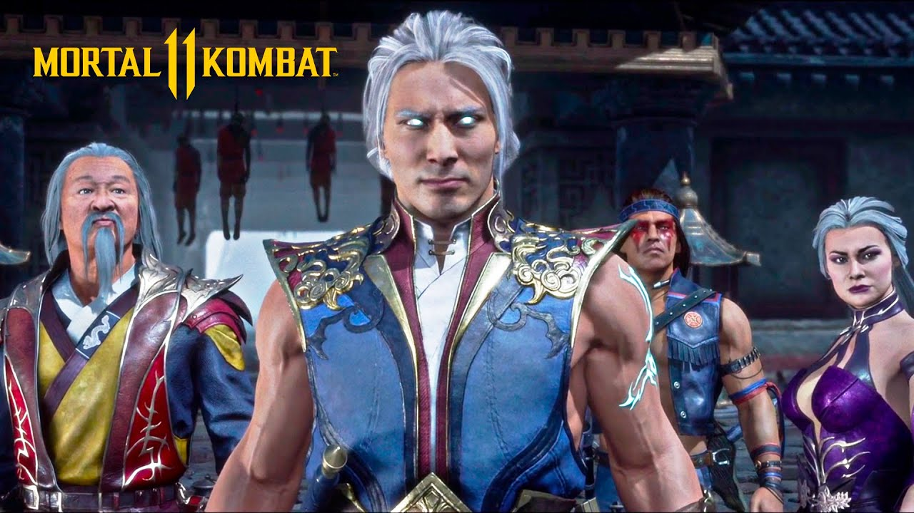
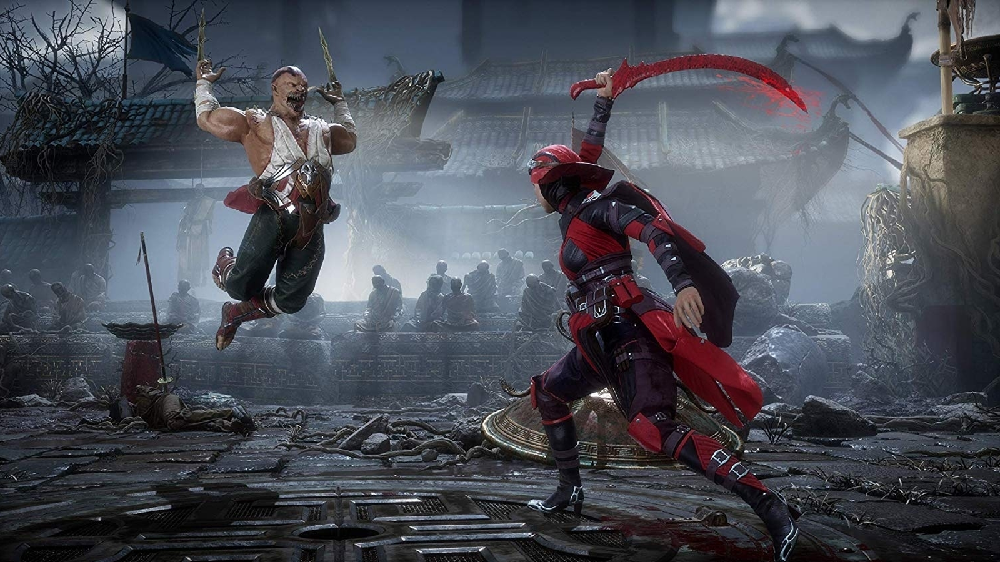
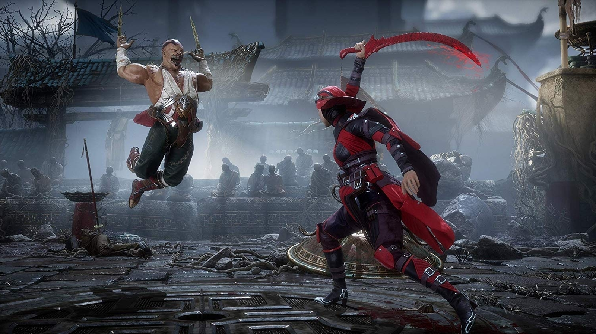

Mortal Kombat 11
Mortal Kombat 11 (MK11) es la undécima entrega principal de la saga de Mortal Kombat, siendo además la vigésima segunda entrega de la misma, la cual fue lanzada el 23 de abril de 2019 para PC, PlayStation 4, Xbox One y Nintendo Switch. Posteriormente, el 19 de noviembre de 2019, también fue estrenada para Google Stadia coincidiendo con el lanzamiento de esta plataforma.
El primer trailer del videojuego sería anunciado por Ed Boon el 6 de diciembre de 2018 a través de The Game Awards 2018. En el trailer, se puede observan solo dos personajes, aunque emblemáticos de los videojuegos: Scorpion y Dark Raiden siendo este último villano.
El videojuego haría su primera aparición en público en el evento The Game Awards 2018, que se realizó en Microsoft Theater, ubicado en Los Ángeles, donde se dieron más detalles y se mostraría el primer gameplay del mismo.
En Mayo de 2020 se lanzó Mortal Kombat 11: Aftermath, que incluye el Mortal Kombat 11, el Kombat Pack y tres personajes nuevos junto con 5 capitulos más del modo historia.
El 17 de noviembre de 2020 se lanzó la versión definitiva de Mortal Kombat 11, Mortal Kombat 11 Ultimate, que incluye todo el contenido original junto con el kombat pack 1, 2 y la expansión Aftermath.
Más imágenes del juego:
 

Volver al sitio principal